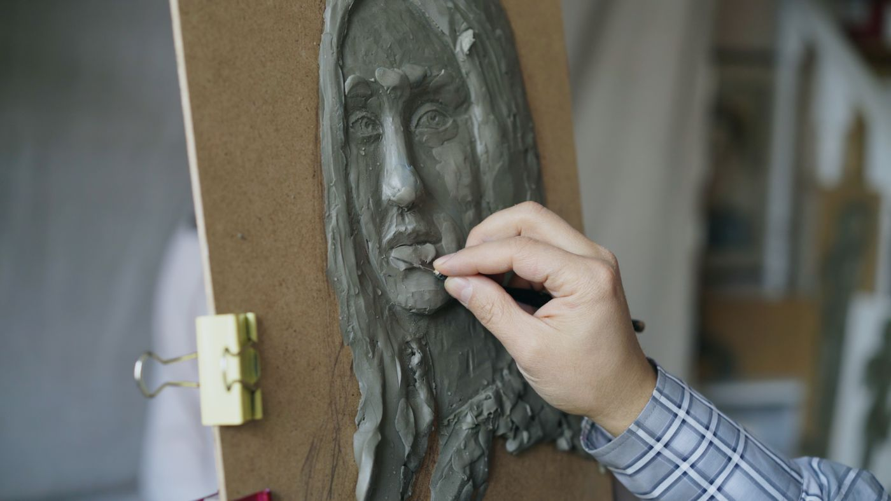
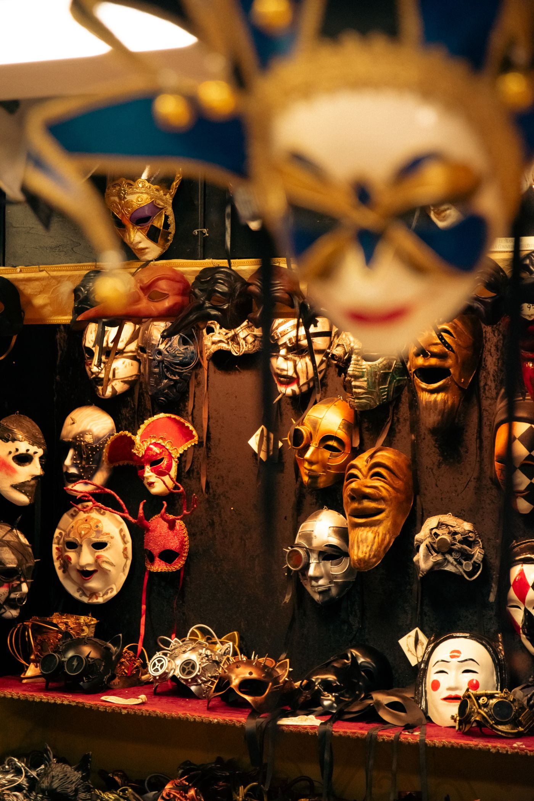

Il Mascarero
Alvise Fabbri
I learned this trade the way it has always been learned in Venice: by sweeping a floor. At sixteen I was taken on in a bottega in Cannaregio to sweep, to tear paper, to wash brushes — and, after two years of that, to touch clay. My master’s rule was that a boy who would not tear paper straight would not model a face straight either. He was right about most things.
Ten years of other men’s benches followed — paperer, gesso hand, finally modeller — before I opened this room in Dorsoduro in 2009. It is one room, one bench, one window of north light. Everything in the gallery upstairs was modelled, papered, gilded and painted here, by the same hands that will answer your letter.
“I will not sell you a mask from a bought-in mould. If the clay did not come from these hands, it does not hang in my window. A mask you could buy in four shops is a souvenir — an honourable trade, but not this one.”
Carnevale is the bench’s harvest, but it is not the whole year. Theatres commission in autumn, weddings in spring, collectors whenever a wall asks for a face. Repairs come in all year round — grandmothers’ bautas, mostly, carried in like patients.
La Cartapesta — The Process
Eight stages, none skippable.
Cartapesta is paper and patience. The stages below are the real ones, in order, with the days they take — they are also the “bench days” counted in the planner’s table.
Disegno — the drawing
The mask is drawn first, full size, from the front and the side. For commissions this drawing is the sketch you approve before anything is modelled.
Creta — the clay
The face is modelled in clay over a head form — every expression a mask will ever have is decided here, in the wet clay, where changes are still free.
Calco — the mould
Plaster is poured over the clay to take a negative mould. The clay is dug out and lost; the mould is what the bench keeps, sometimes for decades.
Carta — the paper
Strips of heavy paper are laid into the mould in flour paste, three or four layers, each pressed into the detail with a brush. This is the cartapesta itself.
Riposo — the drying
Two to three days of nothing. The shell dries in the mould where the air reaches it; rushing this stage is how masks warp, so the bench simply waits.
Gesso — the ground
Out of the mould, the shell is trimmed, the eye holes cut, and the face coated in gesso and sanded — twice — until the paper disappears under a chalk skin.
Pittura e doratura — paint and gold
Colour goes on in thin layers; gold leaf is water-gilded over red bole and burnished with an agate stone. For commissions, this stage is photographed for your approval before varnish.
Nastri — the ribbons
Varnish, then ribbons — silk where the form deserves it — and a final fitting. A moretta gets no ribbons at all: it is held, as it has always been held, by a button between the teeth.
Cura — Aftercare
Keeping a paper mask alive.
Cartapesta is tougher than it looks and weaker than it feels. Four rules cover almost everything; the fourth covers the rest.
Keep it dry
Paper remembers water. Never store a mask in a damp room or a ground-floor cupboard in Venice — acqua alta has ended more masks than dancing ever will.
Hang it, don’t stack it
Hang the mask by its ribbons on a padded hook, out of direct sun. Never stack masks face to face; gilding scratches gilding.
Dust, never wash
A soft dry brush, once in a while, working outward from the eyes. No water, no cloth, no sprays — the varnish is a skin, not a varnish on a boat.
Repairs by post
Cracks, softened cheeks, lost ribbons: post the mask in a firm box with tissue and I will quote before touching it. Repairs run at €30 the hour — the 1962 bauta in the case book took four.
